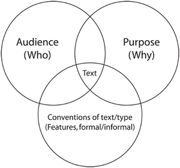

Writing strategies
There are a lot of strategies you can employ when writing.
Plan
- your overall ideas, themes and content
- the structure of the document and development of ideas
- your paragraphs.
Consider
- the conventions or features of the text (eg the layout of a brochure, the sort of language used in an advertisement)
- the purpose of the text (informational/educational/persuasive)
- the audience (who it is aimed at).
These three are interrelated and will affect the language you use. For example, the language and conventions you use in an advertisement (text-type) aimed at getting teenagers (audience) to buy a new mobile phone (purpose) will be different to the language and conventions you would employ in writing a job application.

Add interest by using description
Of the following three opening lines to a story, which is the more gripping sentence?
- Tono was a boy.
- Tono was a naughty 12-year-old boy.
- Tono was a naughty 12-year-old boy who was extremely fond of chillies.
The last sentence is the most interesting because description is used, as is a link word ('who') which extends the sentence.
Add interest by using variety
Try to vary your writing by:
- using different adjectives
- starting sentences in different ways
- experimenting! Don't be scared of experimenting. Indonesian is very easy – keep basic grammar rules in mind and have a go. You'll learn more from giving it a go and making mistakes than you will from playing it safe!